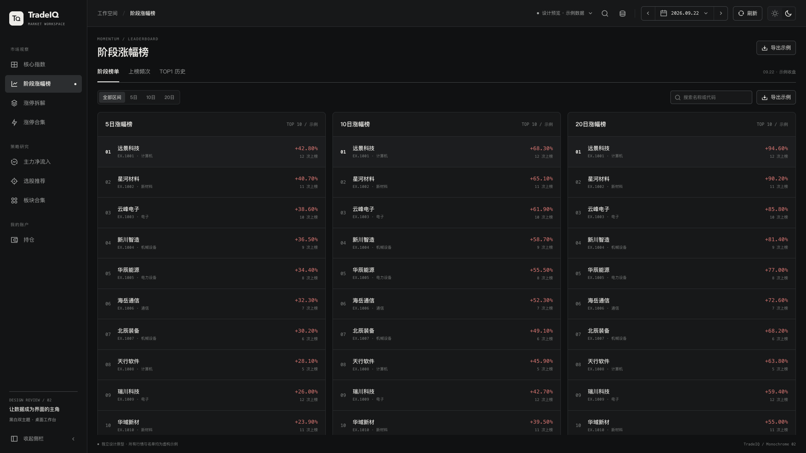
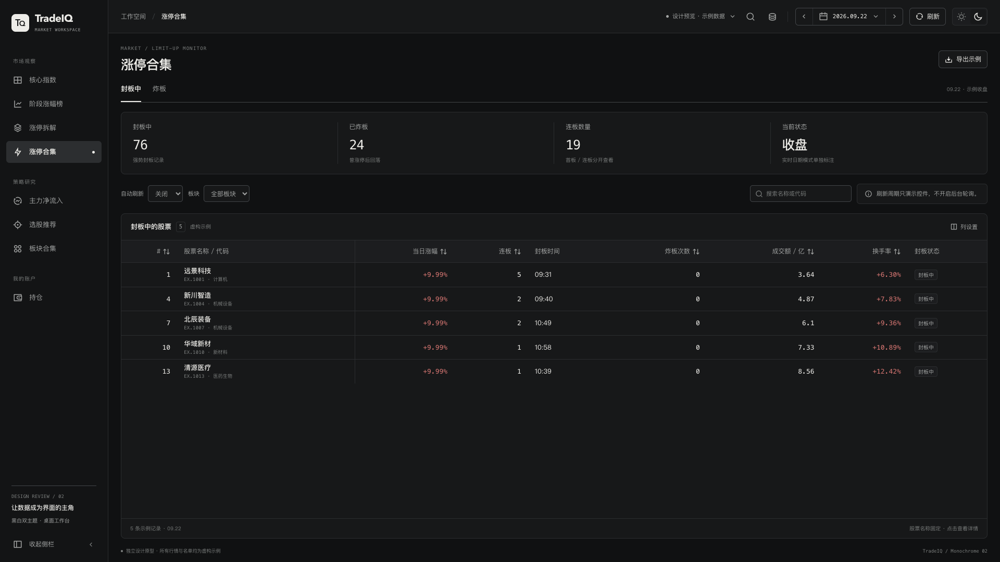
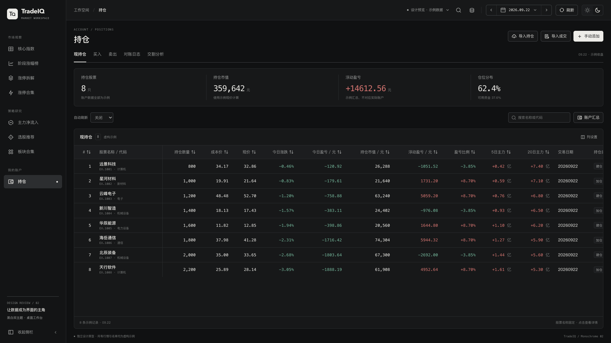
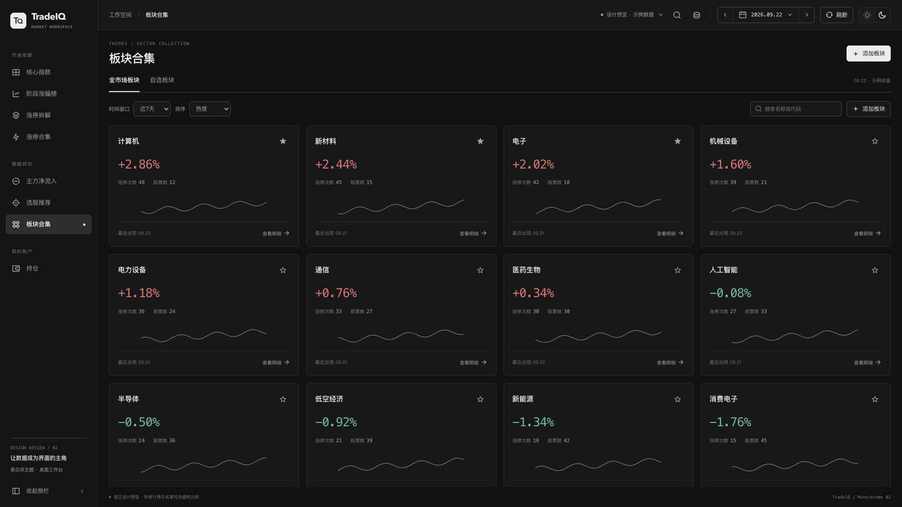

01 · 核心指数LIGHT / 1920 × 1080

02 · 阶段涨幅榜DARK / 1920 × 1080

03 · 涨停拆解LIGHT / 1920 × 1080

04 · 涨停合集DARK / 1920 × 1080

05 · 主力净流入LIGHT / 1920 × 1080

06 · 持仓DARK / 1920 × 1080

07 · 选股推荐LIGHT / 1920 × 1080

08 · 板块合集DARK / 1920 × 1080
